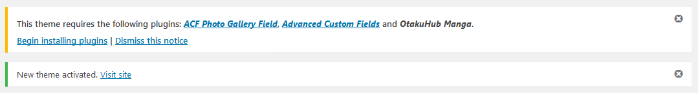
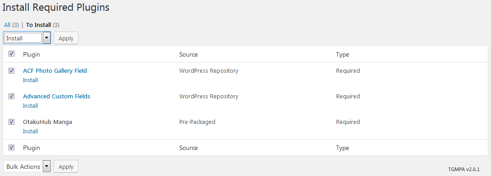
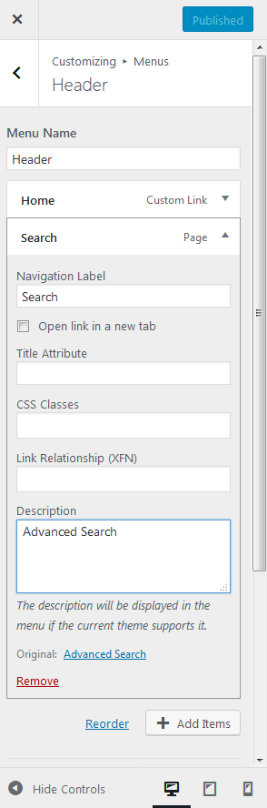

MangaReader WordPress Theme |
|
A basic, lightweight Manga Reader for wordpress!
Please note that this theme is a modified version of an old Wordpress Theme by Angel Castillo called Manga Starter. The theme has been updated by me to work better with the newer wordpress updates
Changelog:
This theme makes use of three plugins that must be installed and activated in order for it to work.
The plugins in question are: OtakuHub Manga (bundled with the theme), Advanced Custom Fields and ACF Photo Gallery Field, all three of them will be installed automatically by the theme so there's no need for you to search a download them manually. It is also highly recommended you use this theme in a fresh WordPress installation.
There are two methods to install MangaReader theme. You may either upload the zipped theme file using the WordPress theme installer (Recommended), or you can upload the unzipped theme folder via FTP (Advanced).
Once you have installed and activated the theme you will see a notice indicating you that you need to install the required plugins, like this:
Click on "begin installing plugins", select all the required plugins and install them:
I will not include an image guide since FTP Uploads is a method for seasoned/advanced users.
There's one little extra step in setting up the required plugin, Advanced Custom Fields.
When you finish installing the theme and installing all three required plugins, please head to Tools -> Import, at the end click on "Run Importer" (install if not installed), find and select the file advanced-custom-field-export.json in the Upload folder of your unzipped file and click "Upload file and import", next you will see a set of options but you can leave them as they are... simply hit the button "Submit", and you're done! ACF has been succesfully configured. Please don't touch the settings as you can break the site if you don't know what you're doing.
WP Post Nav can be set up by adding the name of the Manga in the "Name Manga Here" Taxonomy section.
When creating a chapter enter the name of the manga for the chapter and in WP Post Nav settings enable showing only on chapters page and same category!
The theme options can be found in the Customize option under Appearance.
Menus: This template makes use of menu item description, when adding an element to the menu make sure to add a description to it, like this:
Currently, with the theme options you can customize the logo of the site, Front Carousel in the homepage, and the footer which includes two options: scroll up button, and the option to hide the "Proudly Powered by WordPress" text.
The theme comes with a set of page templates that can be used to display certain information.
To start adding content to your site you can begin by adding a Manga. In your WordPress admin click on Mangas -> Add New.
The moment you add a manga and go to it, you will see "There are no chapters available." in the chapter section. Let's add one!
In your WordPress admin click on Chapters -> Add New.
In this section i will explain a little why the theme needs the three required plugins.
ACF is a powerfull plugin allowing anyone to add custom fields in a easy to use fashion, and when it comes to theme developers, adding those fields anywhere in the theme with a simple line of code. With it you can greatly extend the amount of information a post can hold. In the "Adding Mangas/Chapters" you will see the plugin in action.
This plugin is an extension of Advanced Custom Fields, we use it to upload and display all the pages (images) in a manga chapter.
This custom plugin is actually very small and only controls the registration of the custom post types, taxonomies, custom widgets and custom loop control, we decided to put this in a plugin because if we just make them part of the theme, when you switch themes (for whatever reason) all of your content will suddenly become unaccessible and that is not a good thing to experience.
This plugin is used for next/previous chapter for the manga reader. The plugin can be uploaded and activated using the github version
Thank you again for your purchase and feel free to contact me with any questions regarding this template/theme.
All manga/chapter images used in this documentation belong to their respective owners and are only meant to be used for educational purposes, the theme does not makes them available or contains them inside.
Creator - Ha Sky